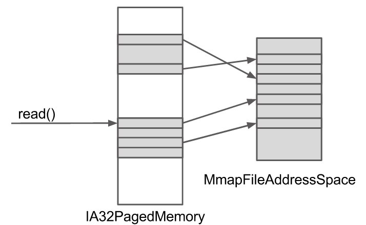
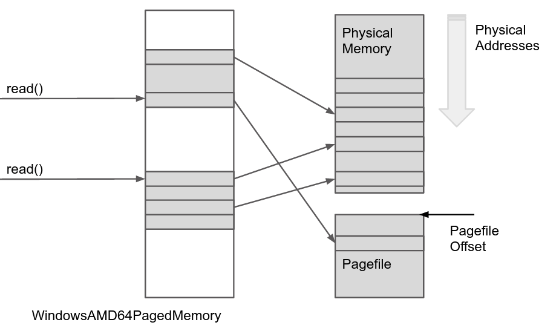
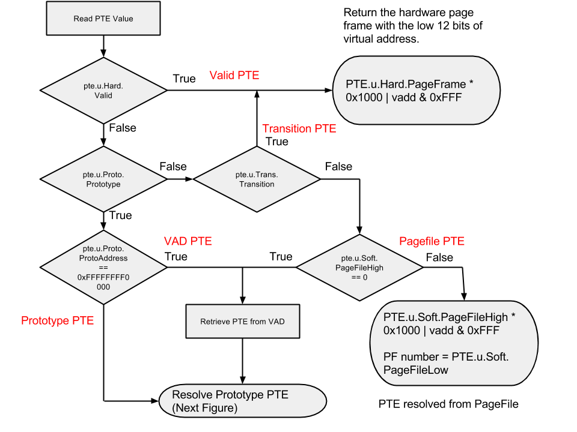
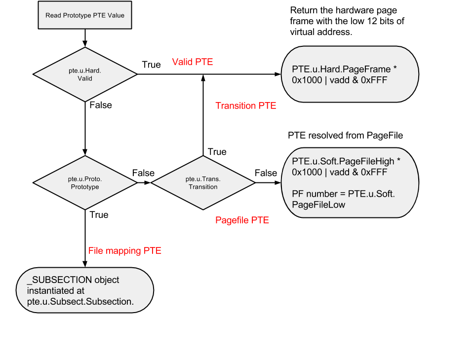
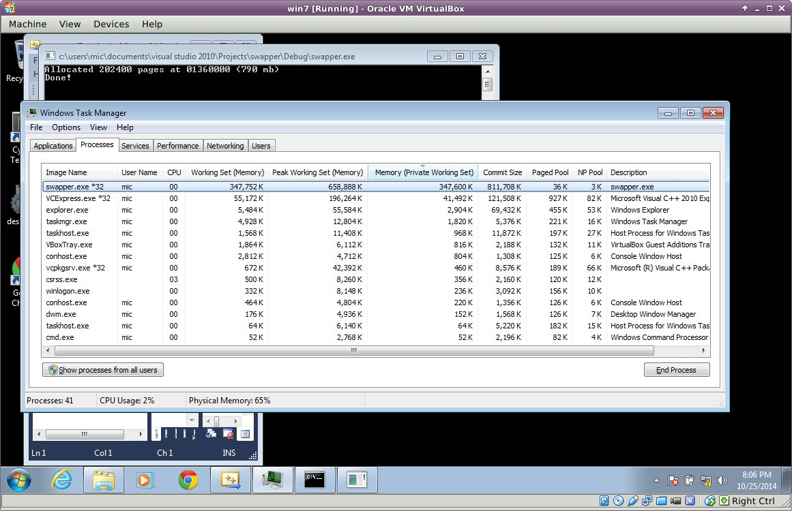
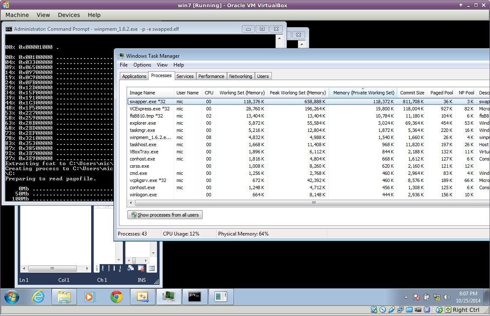

Rekall windows virtual address translation and the pagefile
This article was copied from the Rekall Forensics blog, posted by Michael Cohen on 2014-10-31. Copied with permission for historical preservation.
Windows Virtual Address Translation and the Pagefile
A fundamental capability of any memory analysis framework is to reconstruct the virtual address space from the memory image. While in principle this task is documented by the Intel or AMD programmer manuals, in practice one needs to take into account operating system specific information to fully use all the information available.
Rekall is the first open source memory forensic framework to currently take advantage of the pagefile during the analysis of Windows systems. The WinPmem acquisition tool since version 1.6.2 is capable of automatically capturing the pagefile during acquisition.
In this blog post we explore how Rekall translates virtual addresses into their physical offsets - a pre-requisite to being able to read process and kernel address spaces.
I was recently at the SANS DFIR Summit and got to speak with many practitioners using memory analysis tools such as Rekall or Volatility. One of the comments I found interesting is that people asked why do we not use the pagefile for Windows analyses? Apparently many people have found that critical information was not recoverable by Rekall or Volatility because the pages were not resident (according to the tool).
I decided to add pagefile support to Rekall, and as a result of my research into how paging works in Windows, I have discovered many interesting facts about the way Windows performs virtual address translation. This blog post discusses what I found and how this analysis is implemented in Rekall. The below reflects my current understanding of how things work, but since the exact behavior is not documented by Microsoft, there may be inaccuracies. If you spot an error, please let me know so we can take new information into account.
1. Acquiring the pagefile
The first step to analyzing the pagefile is to actually acquire it. When the operating system is running, the pagefile is locked for exclusive use of the operating system. This means that it is generally not possible to open and read the file directly (Future versions of WinPmem should have support for automatically exposing the pagefile from kernel space.).
The traditional way to copy the pagefile out is via the TSK toolset, using for example a command such as:
C:\> fcat.exe pagefile.sys \\.\c: > pagefile.dd
This opens the raw device corresponding to the C drive, and extracts the file pagefile.sys by parsing the NTFS filesystem directly - thereby bypassing the Windows file locking.
I integrated a statically compiled version of fls.exe in Winpmem and
updated the tool to allow for the acquisition of the pagefile in
addition to the standard ELF format memory image.
C:\projects\rekall\tools\windows\winpmem>winpmem_1.6.2.exe -p -e swapped.elf
Will write an elf core dump.
Extracting driver to C:\Users\mic\AppData\Local\Temp\pme6EBA.tmp
Driver Unloaded.
Loaded Driver C:\Users\mic\AppData\Local\Temp\pme6EBA.tmp.
Deleting C:\Users\mic\AppData\Local\Temp\pme6EBA.tmp
Will write an elf coredump.
CR3: 0x0000187000
2 memory ranges:
Start 0x00001000 - Length 0x0009E000
Start 0x00100000 - Length 0x3FEF0000
Acquitision mode PTE Remapping
00% 0x00001000 .
00% 0x00100000 ..................................................
04% 0x03300000 ..................................................
[.. snip ..]
97% 0x3E900000 .......................
Extracting fcat to C:\Users\mic\AppData\Local\Temp\flsA0A4.tmp
Launching C:\Users\mic\AppData\Local\Temp\flsA0A4.tmp pagefile.sys \\.\C:
Preparing to read pagefile.
0Mb ..................................................
50Mb ..................................................
[.. snip ..]
1050Mb ....................
Driver Unloaded.
The pagefile is appended to the ELF file (so it does not appear in any
program headers) and a short YAML footer is appended. This allows us to
write the image to a non seekable pipe (e.g. so it can be sent over
netcat or encrypted) while still appending data to it. When Rekall reads
the image it follows the PreviousHeader pointer in each YAML footer to
traverse all the footers.
82DF2170 12 12 01 01 00 0A E0 26 01 45 71 0E 0A 0E 7C 07 .......&.Eq...|.
82DF2180 44 0E 21 07 44 0E 02 0E 0A 0E 70 0E 7C 0E 99 0E D.!.D.....p.|...
82DF2190 32 0E 70 0E 32 0E 99 0E 32 0E 02 0E 48 0E 32 0E 2.p.2...2...H.2.
82DF21A0 A9 0E 21 0E 1A 01 01 12 12 02 12 02 12 12 12 12 ..!.............
82DF21B0 12 12 12 12 12 12 12 12 12 12 12 12 01 23 20 50 .............# P
82DF21C0 4D 45 4D 0A 2D 2D 2D 0A 50 72 65 76 69 6F 75 73 MEM.---.Previous
82DF21D0 48 65 61 64 65 72 3A 20 30 78 33 66 66 38 65 30 Header: 0x3ff8e0
82DF21E0 65 38 0A 50 61 67 65 66 69 6C 65 4F 66 66 73 65 e8.PagefileOffse
82DF21F0 74 3A 20 30 78 33 66 66 38 65 31 62 64 0A 50 61 t: 0x3ff8e1bd.Pa
82DF2200 67 65 66 69 6C 65 53 69 7A 65 3A 20 30 78 34 32 gefileSize: 0x42
82DF2210 65 36 34 30 30 30 0A 2E 2E 2E 0A e64000.....
--- swapped.elf --0x82DF221B/0x82DF221B---------------------------------
Rekall can automatically identify the pagefile embedded in this file and add it to the analysis. It is possible to simply extract the pagefile from the Winpmem image by using dd (for example in order to use it in another framework):
dd if=swapped.elf of=pagefile.dd bs=1 skip=$((0x3ff8e1bd))
2. Adding the pagefile to Rekall
So now that Winpmem can acquire the pagefile we can add the pagefile into Rekall. But the main problem is how?
Rekall uses a "Paging Address Space" (for example
the AMD64PagedMemory address space) to translate virtual addresses to
physical addresses. The process is illustrated in the figure below. The
Virtual Address Space is stacked over the physical address space (i.e.
the image) such that a read() operation issued to the Virtual Address
Space is translated into a specific offset from the image.

Figure 1. The virtual address space is stacked over the physical image.
Unfortunately the existing code makes frequent use of the physical address. For example, the scanning infrastructure optimizes physical address space read operations, scanning plugins typically scan the physical address space for pool signatures etc. It would be a major refractoring exercise to modify plugins to also support the pagefile.
There has to be an easier way! The solution we came up with in Rekall is to map the pagefile into the physical address space too. After all, the pagefile is simply an extension of the physical memory; When physical memory is exhausted, the operating system simply moves the page into the pagefile. Similarly we can reference its new location in the same physical address space. This scheme is illustrated in the figure below.

Figure 2. The pagefile is mapped into the physical address space.
The previous Rekall implementation uses the AMD64PagedMemory address
space for all operating systems, but obviously we need to treat the
Windows page file differently from other operating systems when we
support Windows specific pagefiles. In fact there is a subtle bug in
previous Rekall versions (and Volatility), which use this code to
determine if a PTE is valid:
def entry_present(self, entry):
'''
Returns whether or not the 'P' (Present) flag is on
in the given entry
'''
if entry:
if entry & 1:
return True
# The page is in transition and not a prototype.
# Thus, we will treat it as present.
if (entry & (1 << 11)) and not entry & (1 << 10):
return True
return False
This code is a holdover from the old Volatility code base and was
introduced back when people noticed that many pages on a Windows image
are in Transition. Pages in the Transition state are waiting to be
written to the pagefile but still contain valid data. It's just that as
far as the hardware is concerned they are not valid (so CPU access to
these pages will generate a pagefault). Windows uses the
special Transition and Prototype flags (bits 10 and 11) to indicate
the page is in transition. Volatility can simply treat the page as valid
anyway (since it still contains valid data). This was a good idea at the
time and gave us access to more valid pages on Windows images.
But this code is strictly incorrect! The AMD64PagedMemory address
space is used for all operating systems and other operating systems do
not use bits 10 and 11 in this way. Hence it is likely that this would
produce subtly corrupted data on Linux and Mac OS X!
Clearly we need to have a specialized address space for the different
operating systems. Hence in Rekall we introduce
the WindowsAMD64PagedMemory which is only active for Windows profiles.
This address space actually changes the way that virtual page
translation is done almost completely to emulate the Windows kernel as
accurately as possible. Linux and Mac OS X should get their own address
spaces in future (e.g. to handle compressed memory).
3. Virtual Page Translation in Windows
In this section we try to summarize how virtual page translation works
on Windows. The seminal work on this subject was actually published back
in 2007 by Jesse Kornblum (Kornblum, Jesse D. "Using every part of
the buffalo in Windows memory analysis." Digital Investigation 4.1
(2007): 24-29). This was a short but extremely important paper on the
subject. (I am frankly a little embarrassed that we did not implement
the published algorithms until 2014 - almost 7 years late!).
Unfortunately things have changed or there are some inaccuracies in the
original work. We therefore need to re-examine paging on Windows
currently and verify the algorithms published.
In the below I will try to summarize the important points and point out how these are implemented in Rekall. In order to understand how paging works on Windows, I wrote a sample test program, which set up some known memory regions marked with a known pattern (The source code can be seen below). I then acquired the memory images (including pagefile) and attempted to reproduce the known state of the program.
When the CPU addresses memory while running in protected mode, the
Memory Management Unit (MMU) is the hardware component which is
responsible for fetching the content from the physical memory. The MMU
uses the Control Register 3 (CR3) to refer to Page Tables which
specify a translation between the virtual address and physical memory.
Since this translation happens in hardware it is very fast, and more
importantly it is operating system independent. The operating system
simply sets up the page tables in advance and then loads their address
into the CR3 register and the hardware immediately translates the
virtual memory according to this (This is how process context switching
works, the OS simply switches CR3 from one process's memory layout to
the other and each process has a different virtual memory layout).
The page tables are multi-level (e.g. on 64 bit architectures they have
4 levels) but essentially contain Page Table Entries (PTE). I wont go
into the specific of how the hardware follows the page tables themselves
because that is covered in many references, including
Intel® 64 and IA-32 Architectures Software Developer Manuals.
My discussion below focuses on 64 bit architectures, but 32 bit
architectures are analogous.
The PTE is a 64 bit integer which is split into various bitfields and
flags. The PTE can be in a number of states, marked by various flags.
These states determine how to interpret the PTE. On Windows, there are
kernel structs which can be used in each state, making it easier to
interpret the PTE. Below we illustrate the states using the relevant
kernel structs and Rekall.
There are two types of PTEs, which I will call Hardware PTE s
and Software PTE s. The Hardware PTEs are ones that can be seen in
response to a page fault - i.e. the hardware sees the PTE, as it
traverses the page tables from the Page Directory Entry (PDE).
Hardware PTEs are typically allocated in low physical memory addresses
and form part of the page tables of the operating system.
Software PTEs are allocated out of pool space. Typically these PTEs are used to manage large memory mappings. For example, when a VAD region is added, the system allocates an array of continuous PTEs which will be used to control the mapping. Software PTEs are usually the target of Prototype PTEs.
Although similar, Software PTE and Hardware PTE do not share exactly
the same states. Therefore I will list all the states that each type of
PTE can have under different headers.
3.1. Hardware PTE states
Recall that a Hardware PTE is linked directly from the Page Directory
Entry (PDE). The following are the valid PTE states for it.
3.1.1. Valid State
The Valid state is signified by the Valid flag being set. In this case
the hardware is responsible for interpreting the PTE according to the
layout of _PTE_HARDWARE. Note that since the hardware must interpret
the PTE - all operating systems must use the exact same layout.
[_MMPTE_HARDWARE _MMPTE_HARDWARE] @ 0x000000
Offset Field Content
-------------- ------------------------------ -------
0x0 Accessed [BitField(5-6):Accessed]: 0X000000
0x0 CacheDisable [BitField(4-5):CacheDisable]: 0X000000
0x0 CopyOnWrite [BitField(9-10):CopyOnWrite]: 0X000000
0x0 Dirty [BitField(6-7):Dirty]: 0X000000
0x0 Dirty1 [BitField(1-2):Dirty1]: 0X000000
0x0 Global [BitField(8-9):Global]: 0X000000
0x0 LargePage [BitField(7-8):LargePage]: 0X000000
0x0 NoExecute [BitField(63-64):NoExecute]: 0X000000
0x0 Owner [BitField(2-3):Owner]: 0X000000
0x0 PageFrameNumber [BitField(12-48):PageFrameNumber]: 0X000000
0x0 SoftwareWsIndex [BitField(52-63):SoftwareWsIndex]: 0X000000
0x0 Unused [BitField(10-11):Unused]: 0X000000
= 1 -> 0x0 Valid [BitField(0-1):Valid]: 0X000000
0x0 Write [BitField(11-12):Write]: 0X000000
0x0 WriteThrough [BitField(3-4):WriteThrough]: 0X000000
0x0 reserved1 [BitField(48-52):reserved1]: 0X000000
If the Valid flag is not set, the hardware does not care about any of the other flags, it will simply generate a pagefault into the operating system's pagefault handler and pass the PTE to it. This means that for all the other states of the PTE, the OS is free to interpret the PTE as it wishes, i.e. we must have operating system specific code to handle invalid PTEs.
3.1.2. Transition State
Windows has a 'Working Set Trimmer` - a component which removes pages from processes' working set (The Working Set is better known as the Resident Set in POSIX, but is essentially the set of all pages that can be accessed by the process without faulting.). The trimmer tries to remove pages into the pagefile to increase the total number of available physical pages in the system. However, rather than immediately writing the pages to the pagefile, the page is first put into the transition state. This allows the page to be written into the pagefile later, while still containing valid data in memory, in case the process needs that page later (it can quickly be faulted back into the working set).
So a page in transition contains valid data, but when a process accesses it, the hardware will pagefault into the OS handler which will simply mark the page as valid.
Pages are in the Transition state if the Transition flag is on, and the Prototype flag is off:
[_MMPTE_TRANSITION _MMPTE_TRANSITION] @ 0x000000
Offset Field Content
-------------- ------------------------------ -------
0x0 CacheDisable [BitField(4-5):CacheDisable]: 0X000000
0x0 Owner [BitField(2-3):Owner]: 0X000000
0x0 PageFrameNumber [BitField(12-48):PageFrameNumber]: 0X000000
0x0 Protection [BitField(5-10):Protection]: 0X000000
= 0 -> 0x0 Prototype [BitField(10-11):Prototype]: 0X000000
= 1 -> 0x0 Transition [BitField(11-12):Transition]: 0X000000
0x0 Unused [BitField(48-64):Unused]: 0X000000
= 0 -> 0x0 Valid [BitField(0-1):Valid]: 0X000000
0x0 Write [BitField(1-2):Write]: 0X000000
0x0 WriteThrough [BitField(3-4):WriteThrough]: 0X000000
Rekall can make immediate use of pages in Transition since their data is still valid.
3.1.3. Prototype State
The same physical pages may be shared between many different processes.
This is easy to do since you can just have multiple PTEs referring to
the same physical page. The problem for the OS is how to co-ordinate
trimming of shared pages. Since there are many references to the same
physical page, if the OS needs to e.g. relocate the physical page into
the pagefile, it will need to search and update all these references.
Since this is very inefficient, the Windows solution is to use a kind of
"symlink" PTE to direct shared pages to another PTE - called
a Prototype PTE. Thus we only need to update the Prototype PTE and all
PTEs that refer to the shared memory will become automatically updated.
So the best way to think of a Prototype PTE is that it is a symlink to
something else. Here is the Windows struct for the Prototype PTE:
[_MMPTE_PROTOTYPE _MMPTE_PROTOTYPE] @ 0x000000
Offset Field Content
-------------- ------------------------------ -------
0x0 Protection [BitField(11-16):Protection]: 0X000000
0x0 ProtoAddress [BitField(16-64):ProtoAddress]: 0X000000
= 1 -> 0x0 Prototype [BitField(10-11):Prototype]: 0X000000
0x0 ReadOnly [BitField(8-9):ReadOnly]: 0X000000
0x0 Unused0 [BitField(1-8):Unused0]: 0X000000
0x0 Unused1 [BitField(9-10):Unused1]: 0X000000
= 0 -> 0x0 Valid [BitField(0-1):Valid]: 0X000000
The ProtoAddress field contains the address to the prototype PTE
(which is allocated from system pool). The target of the Prototype PTE
is what I refer to as a Software PTE, and can only take on the states
appropriate for the Software PTE (see below).
Note: The prototype PTE is allocated by the system, hence it is a Virtual Address in the kernel's virtual address space. Contrast this with the
PageFrameNumberfield from other states which refer to the physical address space.
3.1.4. VAD Prototype PTE
If the Hardware PTE looks like a Prototype PTE (i.e. has Valid=0,
Prototype=1), and the ProtoAddress is equal to the special
value 0xFFFFFFFF0000 this marks a VAD Prototype. In this case we must
find the VAD region which corresponds with the virtual address in
question. The MMVAD struct then contains a range of PTEs which
corresponds with the entire VAD range. We then calculate the relative
offset of the original virtual address into the VAD region to find its
corresponding PTE.
For example say we try to resolve address 0x10000:
- Traversing the page tables we identify a VAD Prototype PTE
(i.e.
ProtoAddress= 0xFFFFFFFF0000). - We search the process VADs for the region of interest. Say we find a region from 0x8000 to 0x20000.
- The _MMVAD object for this region has a
FirstPrototypePtemember (say it points to 0xFFFF1000000). - The PTE we want is therefore located at (0x10000 - 0x8000) / 0x1000 + 0xFFFF1000000
- We resolve the physical address from that PTE.
3.1.5. Vad Hardware PTE
If the PTE is completely 0, this means that the VAD should be consulted.
This condition seems to also be the case for when the PDE pointing to
the PTE is invalid (I.e. the entire page table is not valid). In this
case we need to examine the VAD in an identical way to the VAD
Prototype PTE above.
This state seems to be identical to the one above.
3.1.6. Software State
If both the Prototype and Transition flags are unset, the PTE refers
to a Software PTE:
[_MMPTE_SOFTWARE _MMPTE_SOFTWARE] @ 0x000000
Offset Field Content
-------------- ------------------------------ -------
0x0 InStore [BitField(22-23):InStore]: 0X000000
0x0 PageFileHigh [BitField(32-64):PageFileHigh]: 0X000000
0x0 PageFileLow [BitField(1-5):PageFileLow]: 0X000000
0x0 Protection [BitField(5-10):Protection]: 0X000000
= 0 -> 0x0 Prototype [BitField(10-11):Prototype]: 0X000000
0x0 Reserved [BitField(23-32):Reserved]: 0X000000
= 0 -> 0x0 Transition [BitField(11-12):Transition]: 0X000000
0x0 UsedPageTableEntries [BitField(12-22):UsedPageTableEntries]: 0X000000
= 0 -> 0x0 Valid [BitField(0-1):Valid]: 0X000000
The Software PTE refers to a paged out page. The PageFileHigh member
is the frame number in the page file (i.e. it must be multiplies by
0x1000 to get the file offset). The PageFileLow member is the number
of pagefile (Windows supports up to 16 pagefiles).
Windows actually keeps data structures of the available pagefiles, their
location and stats. I wrote the pagefiles plugin to show this
information:
[1] Default session 12:25:54> pagefiles
_MMPAGING_FILE Number Size (b) Filename
-------------- ------ ---------- --------------------
0xfa8001cae010 0 1207721984 \??\C:\pagefile.sys
[1] Default session 12:25:57> print session.profile._MMPAGING_FILE(0xfa8001cae010)
[_MMPAGING_FILE _MMPAGING_FILE] @ 0xFA8001CAE010
0x00 Size [unsigned long long:Size]: 0x00047FC6
0x08 MaximumSize [unsigned long long:MaximumSize]: 0x0005DC00
0x10 MinimumSize [unsigned long long:MinimumSize]: 0x0003E800
0x18 FreeSpace [unsigned long long:FreeSpace]: 0x0000EF68
0x20 PeakUsage [unsigned long long:PeakUsage]: 0x00043DF3
0x28 HighestPage [unsigned long long:HighestPage]: 0x00000000
0x30 File <_FILE_OBJECT Pointer to [0xFA8001D15070] (File)>
0x38 Entry
0x48 PageFileName [_UNICODE_STRING PageFileName] @ 0xFA8001CAE058 (\??\C:\pagefile.sys)
0x58 Bitmap <_RTL_BITMAP Pointer to [0xFA8001D40000] (Bitmap)>
0x60 EvictStoreBitmap <_RTL_BITMAP Pointer to [0x00000000] (EvictStoreBitmap)>
0x68 BitmapHint [unsigned long:BitmapHint]: 0x0001220C
0x6C LastAllocationSize [unsigned long:LastAllocationSize]: 0x00000012
0x70 ToBeEvictedCount [unsigned long:ToBeEvictedCount]: 0x00000000
0x74 BootPartition [BitField(4-5):BootPartition]: 0x00000001
0x74 PageFileNumber [BitField(0-4):PageFileNumber]: 0x00000000
0x74 Spare0 [BitField(5-16):Spare0]: 0x00000000
0x76 AdriftMdls [BitField(0-1):AdriftMdls]: 0x00000000
0x76 Spare1 [BitField(1-16):Spare1]: 0x00000000
0x78 FileHandle
0x80 Lock [unsigned long long:Lock]: 0x00000000
0x88 LockOwner <_ETHREAD Pointer to [0xFA8002D93061] (LockOwner)>
You can see the size of the pagefile, and also the allocation bitmap
(which pages in the pagefile are currently used.). Note that
the PageFileNumber associates the PageFileLow member of
the_MMPTE_SOFTWARE struct with the pagefile path.
If we have the pagefile available, we can resolve the PTE immediately and read the data from the pagefile.
3.2. Software PTE states
For some of the states above, when the Hardware PTE is resolved, it might result in referring to a Software PTE (e.g. in Vad PTEs or Prototype PTEs). Decoding the Software PTE requires the following states.
3.2.1. Valid
Same as Hardware PTEs. Can be resolved immediately.
3.2.2. Transition
Same as Hardware PTEs. Can be resolved immediately.
3.2.3. Subsection Prototype PTE
If the PTE has the Prototype bit set, and Valid bit unset (P=1, V=0) it is a Subsection PTE.
A Subsection PTE refers to an instance of a _SUBSECTION object and is
used to denote a File Mapping:
[_MMPTE_SUBSECTION _MMPTE_SUBSECTION] @ 0x000000
Offset Field Content
-------------- ------------------------------ -------
0x0 Protection [BitField(5-10):Protection]: 0X000000
0x0 Prototype [BitField(10-11):Prototype]: 0X000000
0x0 SubsectionAddress [BitField(16-64):SubsectionAddress]: 0X000000
0x0 Unused0 [BitField(1-5):Unused0]: 0X000000
0x0 Unused1 [BitField(11-16):Unused1]: 0X000000
0x0 Valid [BitField(0-1):Valid]: 0X000000
[_SUBSECTION _SUBSECTION] @ 0x000000
Offset Field Content
-------------- ------------------------------ -------
0x0 ControlArea <_CONTROL_AREA Pointer to [0x00000000]>
0x8 SubsectionBase <_MMPTE Pointer to [0x00000000]>
0x10 NextSubsection <_SUBSECTION Pointer to [0x00000000]>
0x18 PtesInSubsection [unsigned long:PtesInSubsection]: 0x00000000
0x20 GlobalPerSessionHead <_MM_AVL_TABLE Pointer to [0x00000000]>
0x20 UnusedPtes [unsigned long:UnusedPtes]: 0x00000000
0x28 u [ u] @ 0x00000028
0x2c StartingSector [unsigned long:StartingSector]: 0x00000000
0x30 NumberOfFullSectors [unsigned long:NumberOfFullSectors]: 0x00000000
Subsection PTEs are used to refer to memory mappings of a file on disk. When a file is mapped into memory (e.g. an executable file or DLL), the file may be shared by many processes. Under memory pressure, the Windows Kernel needs to evict pages from memory, possibly into the pagefile. However, it does not really make sense to copy mapped executable pages into the pagefile, since they originally came from a file mapping (e.g. from disk anyway). So it makes more sense to read the file again from disk if needed in future, rather than waste precious pagefile space on mapped files.
Unfortunately, if we do not have access to the disk image any more, we
can not recover the data in the page any more. We can however, determine
directly which file the page came from by inspecting
the ControlArea field of the _SUBSECTION (So for example
_SUBSECTION.ControlArea.FilePointer.FileName). We can also determine
the offset in that file by subtracting the prototype PTE
from_SUBSECTION.SubsectionBase and adding
the _SUBSECTION.StartingSector:
[_SUBSECTION _SUBSECTION] @ 0x000000
Offset Field Content
-------------- ------------------------------ -------
0x0 ControlArea <_CONTROL_AREA Pointer to [0x00000000]>
0x8 SubsectionBase <_MMPTE Pointer to [0x00000000]>
0x10 NextSubsection <_SUBSECTION Pointer to [0x00000000]>
0x18 PtesInSubsection [unsigned long:PtesInSubsection]: 0x00000000
0x20 GlobalPerSessionHead <_MM_AVL_TABLE Pointer to [0x00000000]>
0x20 UnusedPtes [unsigned long:UnusedPtes]: 0x00000000
0x28 u [ u] @ 0x00000028
0x2c StartingSector [unsigned long:StartingSector]: 0x00000000
0x30 NumberOfFullSectors [unsigned long:NumberOfFullSectors]: 0x00000000
[_CONTROL_AREA _CONTROL_AREA] @ 0x000000
Offset Field Content
-------------- ------------------------------ -------
0x0 Segment <_SEGMENT Pointer to [0x00000000]>
0x8 DereferenceList [_LIST_ENTRY DereferenceList] @ 0x00000008
0x18 NumberOfSectionReferences [unsigned long long]: 0x00000000
0x20 NumberOfPfnReferences [unsigned long long]: 0x00000000
0x28 NumberOfMappedViews [unsigned long long]: 0x00000000
0x30 NumberOfUserReferences [unsigned long long]: 0x00000000
0x38 u [ u] @ 0x00000038
0x3c FlushInProgressCount [unsigned long]: 0x00000000
0x40 FilePointer [_EX_FAST_REF FilePointer] @ 0x00000040
0x48 ControlAreaLock [long]: 0x00000000
0x4c ModifiedWriteCount [unsigned long]: 0x00000000
0x4c StartingFrame [unsigned long]: 0x00000000
0x50 WaitingForDeletion <_MI_SECTION_CREATION_GATE Pointer to [0x00000000]>
0x58 u2 [ u2] @ 0x00000058
0x68 LockedPages [long long]: 0x00000000
0x70 ViewList [_LIST_ENTRY ViewList] @ 0x00000070
[_FILE_OBJECT _FILE_OBJECT] @ 0x000000
Offset Field Content
-------------- ------------------------------ -------
0x0 Type [short]: 0x00000000
0x2 Size [short]: 0x00000000
0x8 DeviceObject <_DEVICE_OBJECT Pointer to [0x00000000]>
0x10 Vpb <_VPB Pointer to [0x00000000]>
0x18 FsContext
0x20 FsContext2
0x28 SectionObjectPointer <_SECTION_OBJECT_POINTERS Pointer to [0x00000000]>
0x30 PrivateCacheMap
0x38 FinalStatus [long]: 0x00000000
0x40 RelatedFileObject <_FILE_OBJECT Pointer to [0x00000000]>
0x48 LockOperation [unsigned char]: 0x00000000
0x49 DeletePending [unsigned char]: 0x00000000
0x4a ReadAccess [unsigned char]: 0x00000000
0x4b WriteAccess [unsigned char]: 0x00000000
0x4c DeleteAccess [unsigned char]: 0x00000000
0x4d SharedRead [unsigned char]: 0x00000000
0x4e SharedWrite [unsigned char]: 0x00000000
0x4f SharedDelete [unsigned char]: 0x00000000
0x50 Flags [unsigned long]: 0x00000000
0x58 FileName [_UNICODE_STRING FileName] @ 0x00000058 ()
0x68 CurrentByteOffset [_LARGE_INTEGER CurrentByteOffset] @ 0x00000068
0x70 Waiters [unsigned long:Waiters]: 0x00000000
0x74 Busy [unsigned long:Busy]: 0x00000000
0x78 LastLock
0x80 Lock [_KEVENT Lock] @ 0x00000080
0x98 Event [_KEVENT Event] @ 0x00000098
0xb0 CompletionContext <_IO_COMPLETION_CONTEXT Pointer to [0x00000000]>
0xb8 IrpListLock [unsigned long long]: 0x00000000
0xc0 IrpList [_LIST_ENTRY IrpList] @ 0x000000C0
0xd0 FileObjectExtension
3.2.4. Demand Zero PTE
If the PTE's target has (Valid=0, Prototype=0, Transition=0) and it also
has PageFileHigh=0, then this page is a demand zero page. The page
fault handler will simply assign a zero page in response to the page
fault. Often this page will also have non-zero Protection bits which
should reflect the VAD's original protections.
3.3. PTE Resolution Algorithm
In order to resolve the PTE we follow a possibly two step algorithm. First resolve the Hardware PTE to receive a Software PTE, then resolve the software PTE if needed.

Figure 3. Resolving a Hardware PTE
- If the Valid flag is set, the PTE is valid and can be resolved immediately.
- If the Transition flag is set, but the Prototype flag is unset, the PTE is in the Transition state and can also be resolved immediately.
- If the Prototype flag is set, but the
ProtoAddressfield is equal to 0xFFFFFFFF0000, this is a Vad PTE and we must consult the VAD to recover the Software PTE. - Alternatively if the PTE has all the Transition, Prototype and Valid flags unset, but the PageFileHigh field is zero, this is also a VAD PTE and we must consult the VAD.
- If the PTE has all the Transition, Prototype and Valid flags unset, but the PageFileHigh field is not zero, this is a Page File PTE and we can recover the page from the pagefile.
- Finally if the Prototype bit is on, then this is a Prototype PTE and we
can read the
Software PTEfrom theProtoAddressfield.
When we obtain the Software PTE we can decode it using a similar but slightly different algorithm. Note that Prototype states are not allowed for Software PTEs (i.e. you cant have a symlink to a symlink essentially).

Figure 4. Resolving a Software PTE
- If PTE has Valid flag it is a valid PTE and can be resolved immediately.
- If PTE has Transition flag set but Prototype flag unset, it is a Transition PTE and can be resolved immediately.
- If the Prototype flag is set, then this is a File Mapping PTE which points to a _SUBSECTION object.
- If all Valid, Prototype and Transition flags are unset,
and
PageFileHighis also zero, then this is a Demand Zero mapping. Return a Zero page. - If all Valid, Prototype and Transition flags are unset,
but
PageFileHighis not zero, then this is a PageFile PTE and we can return the page from the page file.
4. Experiment
In order to study the effects of the new page translation code, I wrote
a small program which allocates a large memory block
(using VirtualAlloc), fills the memory with a pattern and then just
Sleeps. Additionally I mapped a file and also mapped a large region
which is never touched (Demand Zero region):
#include "Windows.h"
void create_file_mapping() {
HANDLE h;
TCHAR *filename = L"c:\\windows\\notepad.exe";
h= CreateFile(filename, GENERIC_READ,FILE_SHARE_READ,
NULL,OPEN_EXISTING,FILE_FLAG_SEQUENTIAL_SCAN,NULL);
DWORD size = GetFileSize(h, NULL);
HANDLE hFileMapping = CreateFileMapping(h, NULL,PAGE_READONLY, 0, 0, NULL);
char *view = (char*) MapViewOfFileEx(hFileMapping, FILE_MAP_READ, 0, 0,0,NULL);
printf("Mapped file into %p %s\n", view, view);
}
int _tmain(int argc, _TCHAR* argv[])
{
int number_of_pages = 202400;
char *pointer = (char *)VirtualAlloc(
NULL, number_of_pages * 0x1000,
MEM_COMMIT | MEM_RESERVE,
PAGE_READWRITE);
char *pointer2 = (char *)VirtualAlloc(
NULL, 2400 * 0x1000,
MEM_COMMIT | MEM_RESERVE,
PAGE_READWRITE);
__int64 i;
int j;
// Read uninitialized data from the allocated range.
char tmp = *pointer2;
create_file_mapping();
if (!pointer) {
LogLastError();
goto exit;
};
printf("Allocated %d pages at %p (%d mb)\n", number_of_pages,
pointer, number_of_pages * 0x1000 / 1024/1024);
printf("Mapped second region at %p\n", pointer2);
// Write pages with pattern.
for (i=0; i<number_of_pages; i++) {
for(j=0; j<0x1000; j+=8) {
*((__int64*)(pointer + i*0x1000+j)) = i;
};
};
exit:
printf("Done!\n");
Sleep(1000000);
return 0;
}
I ran the program (swapper.exe) on a small Windows 7 VM with only 1GB
of ram allocated. I also enabled a few more columns in Task Manager to
observe memory usage. We can see that the program allocated over 800mb
(Commit Size) but only 347Mb is currently resident in memory.

Figure 5. Running a program which allocated a lot of virtual memory.
I then ran WinPmem to acquire the physical memory and the pagefile
(winpmem-1.6.2.exe -p -e swapper.elf).

Figure 6. Acquiring memory with WinPmem.
The additional system activity caused the working set of
the swapper.exe program to be trimmed down to 118Mb within a few
seconds. This is actually a problem because the imager starts writing
the image from physical address 0. The page tables are typically found
at very low physical addresses. For example in this image,
the CR3 value is 0x187000 (About 1.6Mb) into the physical image.
Since it takes a finite time to write the image to disk, and the additional system activity causes processes to be aggressively trimmed, it is very likely that the page tables that are written within a fraction of a second from the start of acquisition would contains PTE references to pages which, although were valid at the start of acquisition, a few seconds later would be paged to disk and re-purposed. The overall effect actually causes Rekall to think that pages contain valid data but in reality they do not (i.e. a data corruption problem). More research is required on the most optimal order of image acquisition ...
5. Analysis
I loaded the file into Rekall as normal and inspected the VAD regions of
the swapper.exe process using the vad plugin:
swapped.elf 17:24:32> vad proc_regex="swapper.exe"
**************************************************
Pid: 656 swapper.exe
VAD lev Start Addr End Addr com Protect Filename
-------------- --- -------------- -------------- --- ------- ------ ------- --------
0xfa8000ed58a0 1 0x000000b10000 0x000000b2afff 21 Mapped Exe EXECUTE_WRITECOPY \Users\mic\Documents\Visual Studio 2010\Projects\swapper\Debug\swapper.exe
0xfa8002e56980 2 0x000000060000 0x00000015ffff 6 Private READWRITE
0xfa800277eb70 3 0x000000040000 0x000000040fff 0 Mapped Exe EXECUTE_WRITECOPY \Windows\System32\apisetschema.dll
0xfa8001b38a40 4 0x000000020000 0x00000002ffff 0 Mapped READWRITE Pagefile-backed section
0xfa800141c3b0 5 0x000000010000 0x00000001ffff 0 Mapped READWRITE Pagefile-backed section
0xfa80017f90b0 5 0x000000030000 0x000000035fff 0 Mapped READONLY Pagefile-backed section
0xfa8000ff91c0 4 0x000000050000 0x000000053fff 0 Mapped READONLY Pagefile-backed section
0xfa8001c06160 3 0x000000190000 0x0000001cffff 7 Private READWRITE
0xfa80025de790 4 0x000000170000 0x000000170fff 1 Private READWRITE
0xfa80019bc300 5 0x000000160000 0x000000160fff 0 Mapped READONLY Pagefile-backed section
0xfa8000d382f0 5 0x000000180000 0x000000180fff 0 Mapped READWRITE Pagefile-backed section
0xfa800277eae0 4 0x000000270000 0x00000032ffff 192 Mapped WRITECOPY \Windows\SysWOW64\en-US\KernelBase.dll.mui
0xfa80027cc090 5 0x000000260000 0x00000026ffff 8 Private READWRITE
0xfa8001a44920 6 0x0000001d0000 0x000000236fff 0 Mapped READONLY \Windows\System32\locale.nls
0xfa800261aa30 5 0x0000003a0000 0x00000041ffff 6 Private READWRITE
0xfa8000e31210 6 0x000000330000 0x00000035ffff 0 Mapped READONLY \Windows\notepad.exe
0xfa8002a60970 6 0x0000005f0000 0x0000006effff 6 Private READWRITE
0xfa800198bc20 2 0x00007efb0000 0x00007efd2fff 0 Mapped READONLY Pagefile-backed section
0xfa8002b432b0 3 0x000075340000 0x000075347fff 2 Mapped Exe EXECUTE_WRITECOPY \Windows\System32\wow64cpu.dll
0xfa800110ac10 4 0x000075270000 0x0000752cbfff 6 Mapped Exe EXECUTE_WRITECOPY \Windows\System32\wow64win.dll
0xfa800108f5f0 5 0x0000321d0000 0x000032b2ffff 2400 Private READWRITE
0xfa8002bc0ac0 6 0x000000b30000 0x0000321cffff 202400 Private READWRITE
0xfa800110ab80 6 0x000063f60000 0x0000640d2fff 8 Mapped Exe EXECUTE_WRITECOPY \Windows\SysWOW64\msvcr100d.dll
0xfa8000fb5650 5 0x0000752d0000 0x00007530efff 3 Mapped Exe EXECUTE_WRITECOPY \Windows\System32\wow64.dll
0xfa80011a8900 4 0x000077590000 0x0000776aefff 0 Private Exe EXECUTE_READWRITE
0xfa8000f582f0 5 0x000076520000 0x00007662ffff 3 Mapped Exe EXECUTE_WRITECOPY \Windows\SysWOW64\kernel32.dll
0xfa800101f380 6 0x000077540000 0x000077586fff 3 Mapped Exe EXECUTE_WRITECOPY \Windows\SysWOW64\KernelBase.dll
0xfa80013c0830 5 0x0000777b0000 0x000077958fff 12 Mapped Exe EXECUTE_WRITECOPY \Windows\System32\ntdll.dll
0xfa8002edcd30 6 0x0000776b0000 0x0000777a9fff 0 Private Exe EXECUTE_READWRITE
0xfa8002db1330 6 0x000077990000 0x000077b0ffff 9 Mapped Exe EXECUTE_WRITECOPY \Windows\SysWOW64\ntdll.dll
0xfa8000f784e0 3 0x00007f0e0000 0x00007ffdffff 0 Private READONLY
0xfa8000db6a80 4 0x00007efde000 0x00007efdefff 1 Private READWRITE \Windows\System32\user32.dll
0xfa8001034eb0 5 0x00007efdb000 0x00007efddfff 3 Private READWRITE
0xfa8000fc1650 5 0x00007efdf000 0x00007efdffff 1 Private READWRITE Pagefile-backed section
0xfa80010e4ce0 6 0x00007efe0000 0x00007f0dffff 0 Mapped READONLY Pagefile-backed section
0xfa80026f82c0 4 0x00007ffe0000 0x00007ffeffff -1 Private READONLY
0xfa8000dee010 5 0x00007fff0000 0x07fffffeffff -1 Private READONLY
I modified the plugin vtop to perform the full analysis mentioned in
this paper and describe each intermediate step. We can therefore use it
to examine some interesting addresses in theswapper.exe address space.
I started off examining some of the pages allocated by swapper.exe in
the large VirtualAlloc region. These pages are marked by their page
number so they should be easy to identify (First we change the process
context to the swapper.exe using the cc plugin):
swapped.elf 18:20:49> cc proc_regex="swapper.exe"
Switching to process context: swapper.exe (Pid 656@0xfa8000fb5060)
swapped.elf 18:20:55> vtop 0x000000b30000 + 4 * 0x1000
Virtual 0xb34000 Page Directory 0x323ef000
pml4e@ 0x323ef000 = 0x940000031ac0867
pdpte@ 0x31ac0000 = 0xb0000007f84867
pde@ 0x7f84028 = 0xc0000025785847
pte@ 0x257859a0 = 0x296a200000080
PTE Contains 0x296a200000080
PTE Type: Pagefile
[_MMPTE_SOFTWARE Soft] @ 0x257859A0
0x00 InStore [BitField(22-23):InStore]: 0x00000000
0x00 PageFileHigh [BitField(32-64):PageFileHigh]: 0x000296A2
0x00 PageFileLow [BitField(1-5):PageFileLow]: 0x00000000
0x00 Protection [Enumeration:Enumeration]: 0x00000004 (MM_READWRITE)
0x00 Prototype [BitField(10-11):Prototype]: 0x00000000
0x00 Reserved [BitField(23-32):Reserved]: 0x00000000
0x00 Transition [BitField(11-12):Transition]: 0x00000000
0x00 UsedPageTableEntries [BitField(12-22):UsedPageTableEntries]: 0x00000000
0x00 Valid [BitField(0-1):Valid]: 0x00000000
PTE mapped at 0x696A2000
Physical Address 0x296a2000@Pagefile
We examine the 4th allocated page. The vtop plugin finds the relevant
PTE and tells us that it is a software PTE. We therefore know that the
relevant offset into the pagefile is found in thePageFileHigh field.
Lets see if this produces the correct data:
swapped.elf 18:20:55> dump 0x000000b30000 + 4 * 0x1000
Offset Hex Data Comment
-------------- ------------------------------------------------ ---------------- -------
0xb34000 04 00 00 00 00 00 00 00 04 00 00 00 00 00 00 00 ................
0xb34010 04 00 00 00 00 00 00 00 04 00 00 00 00 00 00 00 ................
0xb34020 04 00 00 00 00 00 00 00 04 00 00 00 00 00 00 00 ................
0xb34030 04 00 00 00 00 00 00 00 04 00 00 00 00 00 00 00 ................
0xb34040 04 00 00 00 00 00 00 00 04 00 00 00 00 00 00 00 ................
0xb34050 04 00 00 00 00 00 00 00 04 00 00 00 00 00 00 00 ................
0xb34060 04 00 00 00 00 00 00 00 04 00 00 00 00 00 00 00 ................
Yes! The page is marked with the integer 4.
For the next example we want to read the binary itself
for swapper.exe. This is a very common requirement when dumping
malware from memory. We see from the vad output that swapper.exe is
mapped from address 0x000001330000:
swapped.elf 18:22:01> vtop 0x000000b10000
Virtual 0xb10000 Page Directory 0x323ef000
pml4e@ 0x323ef000 = 0x940000031ac0867
pdpte@ 0x31ac0000 = 0xb0000007f84867
pde@ 0x7f84028 = 0xc0000025785847
pte@ 0x25785880 = 0xf8a002bd2ed80400
PTE Contains 0xf8a002bd2ed80400
PTE Type: Prototype
[_MMPTE_PROTOTYPE Proto] @ 0x25785880
0x00 Protection [Enumeration:Enumeration]: 0x00000000 (MM_ZERO_ACCESS)
0x00 ProtoAddress [BitField(16-64):ProtoAddress]: 0xF8A002BD2ED8
0x00 Prototype [BitField(10-11):Prototype]: 0x00000001
0x00 ReadOnly [BitField(8-9):ReadOnly]: 0x00000000
0x00 Unused0 [BitField(1-8):Unused0]: 0x00000000
0x00 Unused1 [BitField(9-10):Unused1]: 0x00000000
0x00 Valid [BitField(0-1):Valid]: 0x00000000
Prototype PTE backed by file.
[_MMPTE_SUBSECTION Subsect] @ 0xF8A002BD2ED8
0x00 Protection [Enumeration:Enumeration]: 0x00000001 (MM_READONLY)
0x00 Prototype [BitField(10-11):Prototype]: 0x00000001
0x00 SubsectionAddress [BitField(16-64):SubsectionAddress]: 0xFA8001A17A70
0x00 Unused0 [BitField(1-5):Unused0]: 0x00000000
0x00 Unused1 [BitField(11-16):Unused1]: 0x00000000
0x00 Valid [BitField(0-1):Valid]: 0x00000000
Filename: \Users\mic\Documents\Visual Studio 2010\Projects\swapper\Debug\swapper.exe
File Offset: 0 (0x0)
Invalid PTE
Physical Address Invalid
This is a Prototype PTE which points to a Subsection PTE, backed by a
file. We can tell the name of the file and
the _FILE_OBJECT responsible for it, but alas this page is not found
in the pagefile nor in memory. We would have to retrieve it from the
file system.
For the next example we try to dump the first page of the
mapped ntdll.dll. This DLL is mapped into every process so it is an
example of shared memory. The VAD tells us that it is mapped at
0x0000777b0000 for this process:
swapped.elf 18:22:06> vtop 0x0000777b0000
Virtual 0x777b0000 Page Directory 0x323ef000
pml4e@ 0x323ef000 = 0x940000031ac0867
pdpte@ 0x31ac0008 = 0x8000002a801867
pde@ 0x2a801dd8 = 0x10a000002f996847
pte@ 0x2f996d80 = 0xf8a0003850580400
PTE Contains 0xf8a0003850580400
PTE Type: Prototype
[_MMPTE_PROTOTYPE Proto] @ 0x2F996D80
0x00 Protection [Enumeration:Enumeration]: 0x00000000 (MM_ZERO_ACCESS)
0x00 ProtoAddress [BitField(16-64):ProtoAddress]: 0xF8A000385058
0x00 Prototype [BitField(10-11):Prototype]: 0x00000001
0x00 ReadOnly [BitField(8-9):ReadOnly]: 0x00000000
0x00 Unused0 [BitField(1-8):Unused0]: 0x00000000
0x00 Unused1 [BitField(9-10):Unused1]: 0x00000000
0x00 Valid [BitField(0-1):Valid]: 0x00000000
PTE Contains 0x800000002318e121
PTE Type: Valid
[_MMPTE_HARDWARE Hard] @ 0xF8A000385058
0x00 Accessed [BitField(5-6):Accessed]: 0x00000001
0x00 CacheDisable [BitField(4-5):CacheDisable]: 0x00000000
0x00 CopyOnWrite [BitField(9-10):CopyOnWrite]: 0x00000000
0x00 Dirty [BitField(6-7):Dirty]: 0x00000000
0x00 Dirty1 [BitField(1-2):Dirty1]: 0x00000000
0x00 Global [BitField(8-9):Global]: 0x00000001
0x00 LargePage [BitField(7-8):LargePage]: 0x00000000
0x00 NoExecute [BitField(63-64):NoExecute]: 0x00000001
0x00 Owner [BitField(2-3):Owner]: 0x00000000
0x00 PageFrameNumber [BitField(12-48):PageFrameNumber]: 0x0002318E
0x00 SoftwareWsIndex [BitField(52-63):SoftwareWsIndex]: 0x00000000
0x00 Unused [BitField(10-11):Unused]: 0x00000000
0x00 Valid [BitField(0-1):Valid]: 0x00000001
0x00 Write [BitField(11-12):Write]: 0x00000000
0x00 WriteThrough [BitField(3-4):WriteThrough]: 0x00000000
0x00 reserved1 [BitField(48-52):reserved1]: 0x00000000
PTE mapped at 0x2318E000
Physical Address 0x2318e000
We see that the PTE is a Prototype PTE pointing to a valid page. We can dump it out to see the familiar MZ header (Note that without interpreting the Prototype PTE we would not be able to read this page at all - even though it is still Valid and present in the memory image!):
swapped.elf 20:50:35> dump 0x0000777b0000
Offset Hex Data Comment
-------------- ------------------------------------------------ ---------------- -------
0x777b0000 4d 5a 90 00 03 00 00 00 04 00 00 00 ff ff 00 00 MZ..............
0x777b0010 b8 00 00 00 00 00 00 00 40 00 00 00 00 00 00 00 ........@.......
0x777b0020 00 00 00 00 00 00 00 00 00 00 00 00 00 00 00 00 ................
0x777b0030 00 00 00 00 00 00 00 00 00 00 00 00 e0 00 00 00 ................
0x777b0040 0e 1f ba 0e 00 b4 09 cd 21 b8 01 4c cd 21 54 68 ........!..L.!Th
0x777b0050 69 73 20 70 72 6f 67 72 61 6d 20 63 61 6e 6e 6f is.program.canno
0x777b0060 74 20 62 65 20 72 75 6e 20 69 6e 20 44 4f 53 20 t.be.run.in.DOS.
0x777b0070 6d 6f 64 65 2e 0d 0d 0a 24 00 00 00 00 00 00 00 mode....$.......
The next example we try to read from locale.nls which is mapped from
0x0000001d0000:
swapped.elf 18:24:07> vtop 0x0000001d0000
Virtual 0x1d0000 Page Directory 0x323ef000
pml4e@ 0x323ef000 = 0x940000031ac0867
pdpte@ 0x31ac0000 = 0xb0000007f84867
pde@ 0x7f84000 = 0x1580000030908847
pte@ 0x30908e80 = 0xffffffff00000420
PTE Contains 0xffffffff00000420
PTE Type: Vad
[_MMPTE_PROTOTYPE Proto] @ 0x30908E80
0x00 Protection [Enumeration:Enumeration]: 0x00000000 (MM_ZERO_ACCESS)
0x00 ProtoAddress [BitField(16-64):ProtoAddress]: 0xFFFFFFFF0000
0x00 Prototype [BitField(10-11):Prototype]: 0x00000001
0x00 ReadOnly [BitField(8-9):ReadOnly]: 0x00000000
0x00 Unused0 [BitField(1-8):Unused0]: 0x00000010
0x00 Unused1 [BitField(9-10):Unused1]: 0x00000000
0x00 Valid [BitField(0-1):Valid]: 0x00000000
Prototype PTE is found in VAD
**************************************************
Pid: 656 swapper.exe
VAD lev Start Addr End Addr com Protect Filename
-------------- --- -------------- -------------- --- ------- ------ ------- --------
0xfa8001a44920 6 0x0000001d0000 0x000000236fff 0 Mapped READONLY \Windows\System32\locale.nls
_MMVAD.FirstPrototypePte: 0xf8a005027cc0
PTE is at 0xf8a005027cc0
PTE Contains 0x4d91921
PTE Type: Valid
[_MMPTE_HARDWARE Hard] @ 0xF8A005027CC0
0x00 Accessed [BitField(5-6):Accessed]: 0x00000001
0x00 CacheDisable [BitField(4-5):CacheDisable]: 0x00000000
0x00 CopyOnWrite [BitField(9-10):CopyOnWrite]: 0x00000000
0x00 Dirty [BitField(6-7):Dirty]: 0x00000000
0x00 Dirty1 [BitField(1-2):Dirty1]: 0x00000000
0x00 Global [BitField(8-9):Global]: 0x00000001
0x00 LargePage [BitField(7-8):LargePage]: 0x00000000
0x00 NoExecute [BitField(63-64):NoExecute]: 0x00000000
0x00 Owner [BitField(2-3):Owner]: 0x00000000
0x00 PageFrameNumber [BitField(12-48):PageFrameNumber]: 0x00004D91
0x00 SoftwareWsIndex [BitField(52-63):SoftwareWsIndex]: 0x00000000
0x00 Unused [BitField(10-11):Unused]: 0x00000000
0x00 Valid [BitField(0-1):Valid]: 0x00000001
0x00 Write [BitField(11-12):Write]: 0x00000001
0x00 WriteThrough [BitField(3-4):WriteThrough]: 0x00000000
0x00 reserved1 [BitField(48-52):reserved1]: 0x00000000
PTE mapped at 0x04D91000
Physical Address 0x4d91000
In this special case, we see that the Prototype PTE has
a ProtoAddress field of 0XFFFFFFFF0000 - the magic signature for the
VAD Prototype PTE. Rekall therefore must search for the containing VAD
region for the virtual address 0x000000110000. The output of
the vad plugin is shown next, and the relevant _MMVAD address is
shown at 0xfa8001a44920. In this case we need to read the first PTE,
which is found to be valid. Hence we can read this page directly from
the memory image:
swapped.elf 18:24:21> dump 0x0000001d0000
Offset Hex Data Comment
-------------- ------------------------------------------------ ---------------- -------
0x1d0000 20 00 00 00 00 00 00 00 00 00 00 00 00 00 00 00 ................
0x1d0010 b0 29 00 00 98 cd 04 00 f8 cb 05 00 50 2e 06 00 .)..........P...
0x1d0020 8a 29 68 03 00 00 00 00 00 00 20 02 00 00 00 00 .)h.............
0x1d0030 68 02 09 00 08 00 28 02 08 00 08 00 28 02 09 00 h.....(.....(...
0x1d0040 08 00 28 02 0a 00 08 00 20 02 08 00 00 00 20 02 ..(.............
0x1d0050 09 00 00 00 48 02 0a 00 48 00 10 02 0b 00 48 00 ....H...H.....H.
0x1d0060 10 02 0b 00 48 04 10 02 05 00 48 00 10 02 05 00 ....H.....H.....
0x1d0070 48 04 10 02 0b 00 40 04 10 02 04 00 48 00 10 02 H.....@.....H...
0x1d0080 07 00 48 00 10 02 04 00 40 04 10 02 07 00 48 04 ..H.....@.....H.
I then used a hex-editor to confirm that this data is indeed the same as
in the locale.nls file.
Its actually kind of fun to look at the output of the vad plugin and
call the vtop plugin in random addresses to see how they are mapped. I
thought it would be useful to see how the entire region is mapped. I
wrote the vadmap plugin which outputs a map of all addresses in the
vad of a process and how they are mapped. Note that vadmap resolves the
Prototype PTEs transparently, so if there is a Prototype PTE that points
to a Valid PTE, vadmap will say it is Valid.
swapped.elf 18:25:32> vadmap proc_regex="swapper.exe"
**************************************************
Pid: 656 swapper.exe
Virt Addr Length Type Comments
-------------- -------------- -------------------- --------
DEBUG:root:Switching to process context: swapper.exe (Pid 656@0xfa8000fb5060)
0x000000010000 0x1000 Transition
0x000000011000 0xf000 Demand Zero
0x000000020000 0x10000 Transition
0x000000030000 0x6000 Pagefile number: 0
0x000000040000 0x1000 Valid
0x000000050000 0x2000 Valid
0x000000052000 0x2000 Pagefile number: 0
0x000000060000 0xfb000 Demand Zero
0x00000015b000 0x5000 Valid
0x000000160000 0x1000 Transition
0x000000170000 0x1000 Pagefile number: 0
0x000000180000 0x1000 Transition
0x000000190000 0x3c000 Demand Zero
0x0000001cc000 0x1000 Pagefile number: 0
0x0000001cd000 0xb000 Valid
0x0000001d8000 0x8000 File Mapping filename: \Windows\System32\locale.nls
0x0000001e0000 0x8000 Valid
0x0000001e8000 0x6000 File Mapping filename: \Windows\System32\locale.nls
0x0000001ee000 0x9000 Valid
0x0000001f7000 0x25000 File Mapping filename: \Windows\System32\locale.nls
0x00000021c000 0x8000 Valid
0x000000224000 0x8000 File Mapping filename: \Windows\System32\locale.nls
0x00000022c000 0x8000 Valid
0x000000234000 0x3000 File Mapping filename: \Windows\System32\locale.nls
0x000000260000 0x1000 Valid
0x000000261000 0x4000 Pagefile number: 0
0x000000265000 0x1000 Valid
0x000000266000 0x2000 Pagefile number: 0
0x000000268000 0x8000 Demand Zero
0x000000270000 0xc0000 File Mapping filename: \Windows\SysWOW64\en-US\KernelBase.dll.mui
0x000000330000 0x30000 File Mapping filename: \Windows\notepad.exe
0x0000003a0000 0x6000 Pagefile number: 0
0x0000003a6000 0x7a000 Demand Zero
0x0000005f0000 0x1000 Pagefile number: 0
0x0000005f1000 0x1000 Valid
0x0000005f2000 0x1000 Pagefile number: 0
0x0000005f3000 0x1000 Valid
0x0000005f4000 0x2000 Pagefile number: 0
0x0000005f6000 0xfa000 Demand Zero
0x000000b10000 0x1000 File Mapping filename: \Users\mic\Documents\Visual Studio 2010\Projects\swapper\Debug\swapper.exe
0x000000b11000 0x10000 Demand Zero
0x000000b21000 0x1000 Valid
0x000000b22000 0x1000 File Mapping filename: \Users\mic\Documents\Visual Studio 2010\Projects\swapper\Debug\swapper.exe
0x000000b23000 0x1000 Valid
0x000000b24000 0x1000 File Mapping filename: \Users\mic\Documents\Visual Studio 2010\Projects\swapper\Debug\swapper.exe
0x000000b25000 0x1000 Valid
0x000000b26000 0x1000 File Mapping filename: \Users\mic\Documents\Visual Studio 2010\Projects\swapper\Debug\swapper.exe
0x000000b27000 0x1000 Pagefile number: 0
0x000000b28000 0x1000 Valid
0x000000b29000 0x2000 File Mapping filename: \Users\mic\Documents\Visual Studio 2010\Projects\swapper\Debug\swapper.exe
0x000000b30000 0xd0000 Pagefile number: 0
0x000000c00000 0x400000 Demand Zero
0x000001000000 0x800000 Pagefile number: 0
0x000001800000 0x200000 Demand Zero
.....
0x000031c3e000 0x592000 Valid
0x0000321d0000 0x1000 Pagefile number: 0
0x0000321d1000 0x95f000 Demand Zero
0x000063f60000 0x1000 File Mapping filename: \Windows\SysWOW64\msvcr100d.dll
0x000063f61000 0x1000 Valid
0x000063f62000 0x15000 File Mapping filename: \Windows\SysWOW64\msvcr100d.dll
We can see some interesting points:
- The executable
swapper.exeis mapped from 0x000000b10000, but some pages are marked as file mappings, some as demand paging (for the spaces between the PE sections), while some are valid (i.e. contain code loaded into memory). We can see that if we dump the VAD region we will only be able to recover some of the pages. - We also see that significant number of pages exist in the pagefile. Note
that
vadmapcan identify pages in the pagefile, regardless if we actually have the page file. This can sometimes be useful in order to assess how important it is to acquire the page file as well. - The entire region mapped for
notepad.execontains subsection PTEs - none of the data was ever read hence no pages were read from the file. - The second allocated region (Using VirtualAlloc at address 0x0000321d0000) was only read once at offset 0, but the rest of the region was never touched. This causes the first page to be backed by memory, and subsequently end up in the page file. The rest of the region remains at Demand Zero state because we never touched it.
6. Conclusions
All of the examples shown yield invalid pages in previous versions of Rekall. However now, after properly interpreting the various PTEs in a Windows specific way, Rekall is able to recover useful data in all these cases. It is quite interesting how much data we have been missing in the past. Even without using the pagefile, we still missed a lot of data because we did not properly support Prototype PTEs, and VAD PTEs. These could often point at a software PTE which might still contain data inside the memory image itself.
How important this data is depends really on how you use memory analysis - if you just want to analyze malware in a controlled environment (e.g. as in a Cuckoobox it is probably possible to create favorable conditions - e.g. add lots of memory so the OS does not swap.
In an incident response situation, however, one has much less control over the environment. Often responders are faced with busy systems, with potentially significant memory pressures, causing a lot of less frequently used data to be paged to disk. In this case we need to make as much as we can from the data we do have, or as Jesse Kornblum said "Use Every Part of the Buffalo".
We are currently working on further testing and implementing pagefile support for other operating systems (e.g. Linux and Mac OS X). Although this feature is really new and not well tested yet, I wanted to write about it here so people know what we are working on for the next release and have a chance to try it out. Please feel free to test and contribute to Rekall, and file issues on github if you find any bugs.